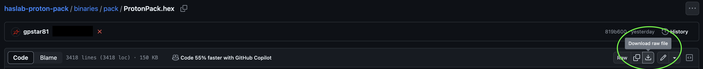
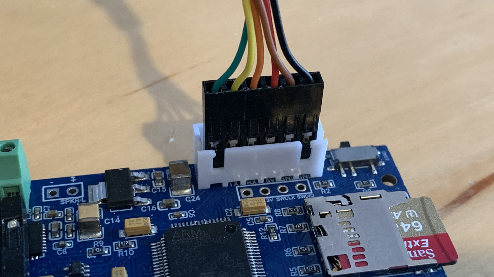
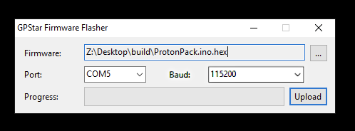
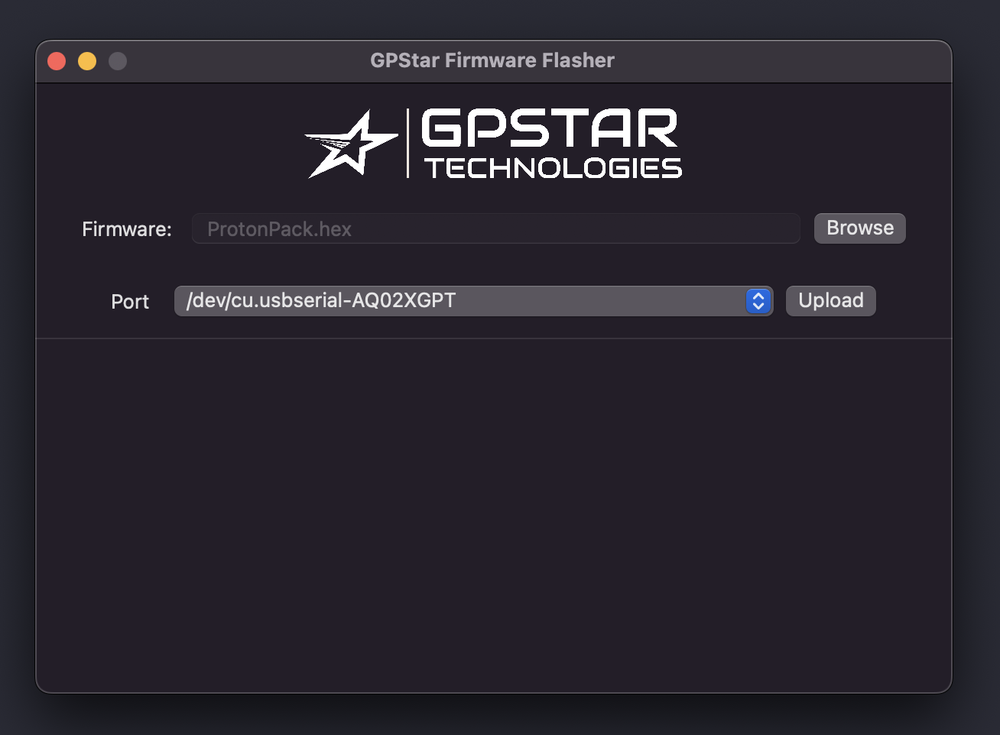

Software Flashing Guide
Each supported device in the GPStar system (Proton Pack, Neutrona Wand, Attenuator, Single-shot Blaster) are separate devices and must be updated individually when software updates are available. The following guide focuses on the core system: the Proton Pack and Neutrona Wand. For updating the Attenuator (aka. Wireless Adapter) or the Single-Shot Blaster, please see their respective guides.
Note that the GPStar Audio may also require updates to firmware, though this will be rare. See the SOUND guide for more information.
Supported Devices
Please refer to the table below for a list of devices and their supported software release.
| Controller Device | v1.x | v2.x | v3.x | v4.x | v5.x | v6.x |
|---|---|---|---|---|---|---|
| Yes | Yes | Yes | Yes | Yes | Yes | |
| Yes | Yes | Yes | Yes | Yes | Yes | |
| d1 DIY Arduino Mega Proton Pack | Yes | Yes 2 | Yes 3 | Yes 3 | Yes 3 | Yes 3 |
| d1 DIY Arduino Mega Neutrona Wand | Yes | Yes 2 | Yes 2 | Yes 2 | Yes 2 | Yes 2 |
| s1 Attenuator (Arduino Nano) | Yes | Yes | Yes | Yes | Yes | No 4 |
| s1 Attenuator (ESP32) | N/A | N/A | Yes | Yes | Yes | Yes |
| s1 Wireless Adapter (ESP32) | N/A | N/A | Yes | Yes | Yes | Yes |
d1 These are now considered as "legacy" devices and have distinct end-of-life notes in later versions (see additional superscript notations).
s1 These are referred to as "Serial1" devices as they attach to the GPStar Proton Pack PCB though they are considered separate devices and will be flashed independently. Please see the ATTENUATOR_FLASHING guide for those instructions.
2 Support for the Arduino Nano as a wand controller ended after the release of v2.2.0. That device must be replaced with a Mega 2560 Pro Mini to support the later software releases.
3 If paired with an Arduino Nano for the Neutrona Wand, this arrangement is deprecated. To continue using the DIY Arduino Mega you will need to upgrade the Neutrona Wand to use the GPStar Neutrona Wand PCB or a Mega 2560 Pro Mini.
4 Support for the Arduino Nano as an Attenuator controller ended as of the v6.0.0 release. That device must be replaced with an ESP-WROOM-32 module to support the later software releases.
📝 IMPORTANT NOTES FOR FLASHING UPDATES 📝
- The same software version should be updated to ALL available devices, even if the changelog does not advertise modifications for a certain component. This ensures proper serial communication between devices.
- If you are flashing updates to your existing setup, make sure that BOTH your Proton Pack and Neutrona Wand Micro SD Cards have all the latest sound effects from this repository as found in the sounds directory.
Flashing Updates
After connecting your GPStar Proton Pack or Neutrona Wand board to your computer with the included FTDI to USB programming cable, download the GPStar firmware flasher from the extras folder and run the program.
As of the v5.4.4 release, new versions of the flasher utilities are available and are encouraged to be used instead of any older copies. These provide more integity/size checks for selected files, ensuring you have selected a true binary file.
GPStar Pack/Wand Firmware Flasher
GPStar Audio Firmware Flasher
- Windows (x64 only)
- MacOS Intel (Must enable Rosetta for Apple Silicon CPUs)
GPStar ESP32 Firmware Flasher
The latest pre-compiled firmware binaries can be found in the binaries folder of this repository.\ Binaries Folder
The GPStar Audio firmware binary can be found in the extras/sound/GPStar Audio folder.\ GPStar Audio Folder
When downloading the binaries via GitHub, click on the file then on the Download raw file button.
It is recommended to have both the Proton Pack and Neutrona Wand on the same, latest version of their respective firmware.

You can also find the latest stable versions of the Firmware and Flashing software at:
https://gpstartechnologies.com/pages/support-downloads
Connection to your GPStar Proton Pack and Neutrona Wand PCBs
Use the included FTDI to USB programming cable that comes with the GPStar kits or use any other suitable FTDI 5V basic serial connector. The UART Pins on the PCB should align with with the standard wire order for FTDI-to-USB cables which use a single Dupont 6-pin connector. Observe these common colours and notes to ensure proper orientation:
- The ground pin will typically be a black wire, while VCC will typically be red.
- The DTR pin on the PCB will connect to a wire labelled either DTR or RTS.
- Any wire labelled CTS will be connected to the 2nd pin labelled GND on the PCB.
- Be careful to not reverse the connector!

Note: For the Neutrona Wand, some users have adopted use of the Hasbro Plasma Series Spengler's Neutrona Wand: Data Port Front Tube as offered by RADIsLAB, which includes a parts list for a dedicated programming cable which stay mounted inside of the device.
Connection to your GPStar Audio
Use the included FTDI to USB programming cable that comes with the GPStar kits or use any other suitable FTDI 5V basic serial connector. The UART Pins on the PCB should align with with the standard wire order for FTDI-to-USB cables which use a single Dupont 6-pin connector. Observe these common colours and notes to ensure proper orientation:
IMPORTANT: Beside the connection on the GPStar Audio board, there is a small black switch, move it to the LOAD position before connecting the cable.
After flashing, please move the switch back to the BOOT position.

Using the Flashing Software
Windows

- Open the firmware flasher, then select the firmware from the firmware selection box then select the firmware from the firmware selection box for the GPStar board you wish to flash.
- Then select the PORT for the connection to your GPStar Board.
Microsoft Windows users: The Default baud rate of 115200 should already be automatically selected.The PORT will be different for every user and may not look like what you see in the screenshot image. If you attempt to flash and your GPStar board can not be found, please select another PORT from the drop down menu and try again. - Click on the UPLOAD button and wait for it to complete.
Note: If connecting the programming cable for the first time to your computer, it may take Windows a few minutes to setup the USB/TTL drivers automatically before it start working.
macOS

- Open the firmware flasher by double-clicking the .DMG file. This will mount a new drive for the application.
- Go to the mounted drive "GPSTAR-FIRMWARE-FLASHER" and double-click on the
GPStar-Firmware-Flasher.appto start the program. - Select the firmware from the firmware selection box for the GPStar board you wish to flash.
- Then select the PORT for the connection to your gpstar Board after connecting the gpstar board to your computer with the programming cable.
The PORT will be different for every user and may not look like what you see in the screenshot image. - Click on the UPLOAD button and wait for it to complete.
Flashing Update Instruction Video
Firmware Update Instruction Video (YouTube)

(Optional) Compiling Source Code and Manually Flashing
If you prefer to make adjustments to the source code configuration options instead of flashing pre-compiled binaries, refer to the Compiling and Flashing link below.